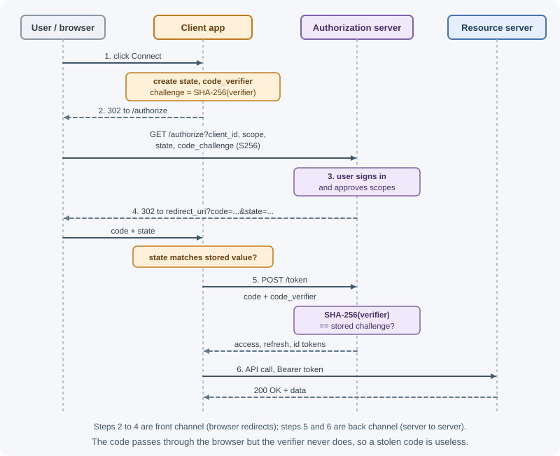
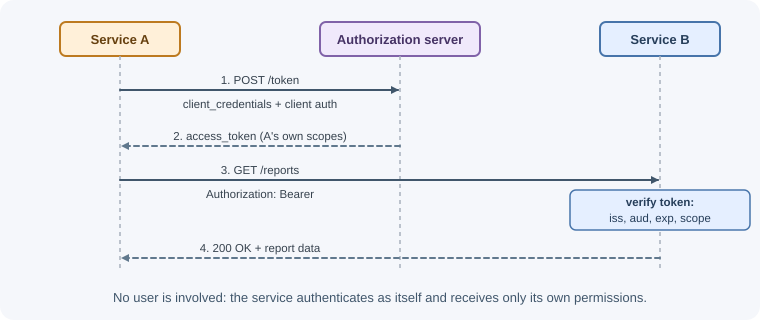
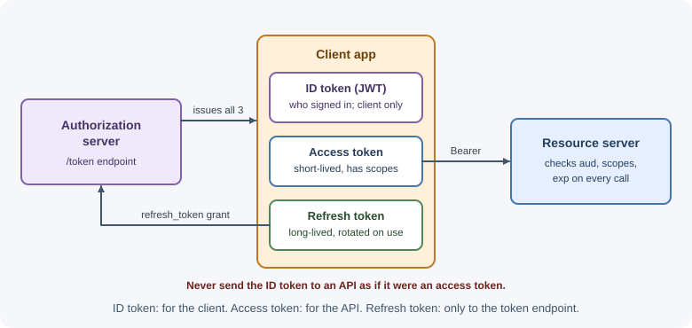

OAuth 2.0, OpenID Connect, and SSO¶
OAuth 2.0 is a framework that lets an application get limited access to a user's resources on another service without ever seeing the user's password. OpenID Connect (OIDC) is a thin identity layer on top of OAuth 2.0 that also tells the application who the user is. Together they power "Sign in with Google," third-party API access, and single sign-on across company apps.
Why it matters¶
Before OAuth, an app that wanted to read your calendar asked for your email password. That gave the app full, permanent access to your account, and the only way to revoke it was to change your password everywhere. OAuth replaces password sharing with scoped, revocable tokens issued by the service that owns the account.
Backend developers meet OAuth and OIDC constantly: adding social login, calling Google, GitHub, Microsoft, or Stripe APIs on a user's behalf, protecting their own APIs with an identity provider such as Auth0, Okta, Keycloak, Cognito, or Entra ID, and securing machine-to-machine calls. Misconfigured flows are a common source of account takeover bugs.
Real-world usage¶
- "Sign in with Google". Google's sign-in is OpenID Connect: the app
receives an ID token digitally signed by Google and must validate its
signature (keys from the
jwks_uriin Google's discovery document),iss,aud, andexpbefore trusting it (Google Identity: OpenID Connect). Google publishes its authorization and token endpoints, and the PKCE methods it supports, in that discovery document. - The device flow at GitHub. GitHub supports the device authorization flow for headless apps such as CLI tools and the Git Credential Manager, and marks PKCE as strongly recommended for its web flow (GitHub Docs: authorizing OAuth apps).
- Microsoft identity platform. Microsoft documents the authorization code flow paired with PKCE and OpenID Connect for single-page apps and server-based web apps that sign users in with Microsoft Entra ID (Microsoft Learn: auth code flow).
Popular tools and providers: identity providers such as Google,
Microsoft Entra ID, Okta, Auth0, Amazon Cognito, and Keycloak; client
libraries such as openid-client and Passport.js strategies.
How it works¶
The problem OAuth solves¶
OAuth is about delegated authorization: the user (resource owner) authorizes an application (client) to do specific things (scopes) with their data on a service (resource server), and the authorization server issues an access token representing that grant.
OAuth by itself does not define how to log a user in. An access token says "the holder may call this API," not "this is Alice." Identity is what OpenID Connect adds.
Roles¶
| Role | Who it is | Example |
|---|---|---|
| Resource owner | The user who owns the data | You |
| Client | The application requesting access | A scheduling app |
| Authorization server | Authenticates the user, asks for consent, issues tokens | Google's accounts service |
| Resource server | The API holding the data; accepts access tokens | Google Calendar API |
Confidential and public clients¶
- Confidential client: runs on a server and can keep a secret (a
client_secretor a private key). Example: an Express backend. - Public client: cannot keep a secret because its code runs on the user's device. Examples: single-page apps, mobile apps, desktop apps. Anything shipped to users can be extracted.
Public clients must use PKCE and never embed a client secret. Confidential clients should also use PKCE: the OAuth 2.0 Security Best Current Practice (RFC 9700) makes PKCE mandatory for public clients and recommended for confidential ones, and the OAuth 2.1 draft requires it for every client that uses the authorization code flow.
Authorization code flow with PKCE¶
This is the recommended flow for user-facing apps. PKCE (Proof Key for Code Exchange, pronounced "pixie") stops an attacker who intercepts the authorization code from redeeming it.

Step by step:
- The client creates three values: a random
state(CSRF protection for the redirect), a randomcode_verifier(43–128 characters), and thecode_challenge, which is the base64url-encoded SHA-256 hash of the verifier. - Redirect to the authorization endpoint with
client_id,redirect_uri,scope,state,code_challenge, andcode_challenge_method=S256. - The user authenticates at the authorization server (never at the client) and approves the scopes on a consent screen.
- The authorization server redirects back to the registered
redirect_uriwith a short-lived, single-usecodeand the samestate. The client rejects the response ifstatedoes not match what it stored. - Token exchange: the client sends the code and the original
code_verifierto the token endpoint over a back channel (server to server). The server hashes the verifier and compares it with the challenge from step 2. Confidential clients also authenticate here. - Use the access token to call the resource server. Store the refresh token securely on the server.
An attacker who steals the code from the redirect cannot redeem it without
the code_verifier, which never left the client.
Client credentials flow¶
For machine-to-machine calls with no user involved: a backend authenticates with its own credentials and receives an access token for its own permissions.

Device authorization flow¶
For devices with no browser or awkward input (smart TVs, CLIs, consoles):
- The device asks the authorization server for a
device_codeand a shortuser_code. - It shows: "Go to example.com/device and enter ABCD-EFGH."
- The user completes sign-in and consent on a phone or computer.
- Meanwhile the device polls the token endpoint until it receives tokens (or is told to slow down or that the code expired).
Refresh tokens¶
Access tokens are short-lived. A refresh token lets the client get a new
access token without sending the user through the flow again
(grant_type=refresh_token). Treat refresh tokens like passwords: keep them
server-side for confidential clients, and expect rotation (a new refresh token
on each use) from modern authorization servers. Some providers only issue a
refresh token when you request a specific scope or parameter (for example,
offline_access in OIDC).
Deprecated grants¶
- Implicit grant: returned the access token directly in the redirect URL fragment. Tokens leaked through browser history, referrer headers, and logs, and there was no way to bind them to the client. Replaced by authorization code + PKCE for SPAs.
- Resource owner password credentials grant: the client collected the user's username and password and sent them to the token endpoint. This defeats the purpose of OAuth, trains users to type passwords into third-party apps, and cannot support MFA or passkeys properly.
RFC 9700 says clients should not use the implicit grant (or any response type that returns access tokens in the authorization response) and that the password grant must not be used. The OAuth 2.1 draft leaves both grants out of the specification entirely.
Scopes and consent¶
A scope is a named permission the client requests, such as
calendar.readonly or repo. The authorization server shows them on the
consent screen; the user can approve or refuse; the issued token carries only
the approved scopes. Request the minimum scopes you need, and ask for
additional scopes incrementally when the feature that needs them is used.
The resource server must check scopes on each request: a token with
calendar.readonly must not be able to delete events.
Access token formats¶
- Opaque tokens: random strings with no readable content. The resource server validates them by calling the authorization server's introspection endpoint (RFC 7662) or a shared store. Easy to revoke.
- JWT access tokens: self-contained, signed tokens the resource server
verifies locally with the issuer's public keys (JWKS). Validate signature,
iss,aud,exp, and scopes. Harder to revoke before expiry. See sessions, cookies, and JWT.
The client should treat access tokens as opaque either way; only the resource server interprets them.
OpenID Connect: adding identity¶
OIDC uses the same authorization code flow, with the openid scope, and the
token response also includes an ID token — a JWT describing the
authentication event and the user.
| ID token claim | Meaning |
|---|---|
iss |
The identity provider that issued the token |
sub |
A stable, unique identifier for the user at that provider — use this as the account key |
aud |
Your client ID; reject tokens issued for another client |
exp, iat |
Expiry and issue time |
nonce |
The random value you sent in the request; prevents replaying an old ID token |
auth_time, amr, acr |
When and how the user authenticated (for example, with MFA) |
email, email_verified, name, picture |
Profile claims, depending on requested scopes (email, profile) |
Other OIDC pieces:
- UserInfo endpoint: returns profile claims for an access token.
- Discovery document:
https://<issuer>/.well-known/openid-configurationlists the authorization, token, userinfo, and JWKS endpoints and supported features, so libraries can configure themselves. - ID token versus access token: the ID token is for your app to learn who signed in. The access token is for calling APIs. Do not send ID tokens to APIs as access tokens.

Single sign-on (SSO) and SAML¶
Single sign-on lets a user authenticate once with an identity provider (IdP) and then access many applications without signing in again, because each app trusts the IdP's session. In companies, this centralizes MFA, password policy, and off-boarding: disable one account and access to every app stops.
- OIDC is the modern choice for web, mobile, and API-based apps.
- SAML 2.0 is an older XML-based standard still widely used for enterprise SSO into business software. The IdP sends a signed XML assertion to the app (the service provider) through the browser.
Many SaaS products support both; enterprise customers often ask for SAML.
Walkthrough: "Sign in with Google"¶
- Register your app in the provider's console: get a
client_id(and a secret for a server app) and register exact redirect URIs. - User clicks "Sign in with Google." Your backend creates
state,nonce, and a PKCE verifier, stores them in the user's pre-login session, and redirects to Google withscope=openid email profile. - The user signs in at Google and consents.
- Google redirects to your callback with
codeandstate. You checkstate, then exchange the code (with the verifier) for tokens. - You validate the ID token: signature with Google's JWKS,
iss,audequals your client ID,exp, andnonce. - You look up the user by the provider and
sub(not by email alone), creating an account on first sign-in. Only link to an existing account by email ifemail_verifiedis true and your linking rules allow it. - You create your own session for the user (for example, a session cookie). You do not need to keep Google's tokens unless you will call Google APIs.
Security pitfalls¶
- Missing or unchecked
state: allows login CSRF — an attacker makes the victim's browser complete a flow that signs them into the attacker's account. - Loose redirect URI matching: if the server allows wildcards or prefix matches, attackers can redirect codes or tokens to their own site. Register exact URIs.
- Open redirects in your app: an unvalidated
?next=parameter on the callback can leak codes or tokens. - Token leakage: tokens in URLs, logs, analytics, or
Refererheaders. Keep tokens out of query strings. - Not validating ID tokens: skipping
aud,iss,exp, ornoncechecks lets tokens for other apps or old tokens be accepted. - Using email as the identity key: emails can change or be unverified;
use
iss+sub. - Client secrets in frontend or mobile code: public clients cannot keep secrets; use PKCE.
- Over-broad scopes: requesting more than needed increases damage if a token leaks.
When to use and when not to use¶
Use OAuth 2.0 / OpenID Connect when:
- Users should sign in with an account they already have (Google, Microsoft, a company identity provider).
- Your app calls another service's API on a user's behalf.
- Many of your own apps should share one sign-in (SSO).
- Services call each other and need short-lived, scoped credentials.
Do not use it when:
- You only need your own users to sign in to your own app with a password — a session is enough; OIDC adds value only with an external identity provider.
- A partner integration is server-to-server and an API key with rotation is agreed — OAuth adds machinery without benefit.
- You are tempted to use the implicit or password grants — use the authorization code flow with PKCE instead.
| Situation | Flow or standard |
|---|---|
| Web, mobile, or SPA user sign-in | Authorization code + PKCE, with OIDC |
| Calling a third-party API for a user | Authorization code + PKCE, minimal scopes |
| Backend service calling another service | Client credentials |
| TV, console, or CLI without a browser | Device authorization flow |
| Enterprise customer requires SSO | OIDC, or SAML 2.0 if their IdP needs it |
| Simple partner integration | API key (not OAuth) |
Practical examples¶
Generating PKCE values in Node.js¶
import { randomBytes, createHash } from "node:crypto";
export function createPkcePair() {
// 32 random bytes → 43-character base64url string
const codeVerifier = randomBytes(32).toString("base64url");
const codeChallenge = createHash("sha256")
.update(codeVerifier)
.digest("base64url");
return { codeVerifier, codeChallenge };
}
export function createState() {
return randomBytes(16).toString("base64url");
}
Starting the flow and handling the callback (Express sketch)¶
app.get("/auth/google", (request, response) => {
const { codeVerifier, codeChallenge } = createPkcePair();
const state = createState();
const nonce = createState();
// Remember them for the callback (server-side session)
request.session.oauth = { state, nonce, codeVerifier };
const url = new URL("https://accounts.google.com/o/oauth2/v2/auth");
url.search = new URLSearchParams({
response_type: "code",
client_id: process.env.GOOGLE_CLIENT_ID,
redirect_uri: process.env.GOOGLE_REDIRECT_URI,
scope: "openid email profile",
state,
nonce,
code_challenge: codeChallenge,
code_challenge_method: "S256",
}).toString();
response.redirect(url.toString());
});
app.get("/auth/google/callback", async (request, response, next) => {
const saved = request.session.oauth;
delete request.session.oauth; // single use
if (!saved || request.query.state !== saved.state) {
return response.status(400).send("Invalid sign-in state");
}
// Exchange the code for tokens (back channel, server to server)
const tokenResponse = await fetch("https://oauth2.googleapis.com/token", {
method: "POST",
headers: { "content-type": "application/x-www-form-urlencoded" },
body: new URLSearchParams({
grant_type: "authorization_code",
code: String(request.query.code),
redirect_uri: process.env.GOOGLE_REDIRECT_URI,
client_id: process.env.GOOGLE_CLIENT_ID,
client_secret: process.env.GOOGLE_CLIENT_SECRET,
code_verifier: saved.codeVerifier,
}),
});
if (!tokenResponse.ok) {
return response.status(502).send("Could not complete sign-in");
}
const tokens = await tokenResponse.json();
// Validate the ID token with a library (signature via JWKS, iss, aud,
// exp, nonce), then find or create the user by iss + sub.
const claims = await verifyGoogleIdToken(tokens.id_token, saved.nonce);
const user = await users.findOrCreateByProvider("google", claims.sub, claims);
// Create your own session; regenerate the ID to prevent fixation
request.session.regenerate((error) => {
if (error) return next(error);
request.session.userId = user.id;
response.redirect("/");
});
});
In production, prefer a maintained OIDC client library (for example,
openid-client) or your identity provider's SDK, which handles discovery,
JWKS caching, and ID token validation for you.
Best practices¶
- Use the authorization code flow with PKCE for every user-facing client.
- Never use the implicit or password grants in new systems.
- Register exact redirect URIs; never allow wildcards in production.
- Always send and verify
state; send and verifynoncewith OIDC. - Validate ID tokens and JWT access tokens fully: signature,
iss,aud,exp. - Request minimal scopes; ask for more only when needed.
- Keep client secrets and refresh tokens on the server, encrypted at rest.
- Identify users by
iss+sub; link accounts by email only when verified. - Use your identity provider's discovery document and a maintained library.
In production¶
- Redirect URI mismatch. Symptom: the provider shows an error page
instead of the consent screen, typically after a new deploy or domain.
Detect: the provider names the error — Google, for example, reports
redirect_uri_mismatch. Cause: the redirect URI you send differs from the registered one —httpversushttpsbehind a proxy, a trailing slash, a different port. Fix: build the redirect URI from configuration, not from the incoming request's host, and register the exact URI for every environment. - "Invalid sign-in state" on the callback. Symptom: some users bounce
back to the sign-in page after consenting. Detect: the callback logs
missing or mismatched
state. Cause: the pre-login session cookie was not sent on the redirect back from the provider — it wasSameSite=Strict(the return is a cross-site navigation), or the callback landed on another instance without a shared session store. Fix: useSameSite=Laxfor that cookie and a shared session store. invalid_grantwhen exchanging the code. Symptom: sign-in fails intermittently at the token step. Detect: the token endpoint returnsinvalid_grant. Cause: the code was used twice (a refreshed callback page or a retried request), it expired, or thecode_verifierorredirect_uridid not match. Fix: exchange each code once, never retry the exchange automatically, and send the sameredirect_urias in the authorization request.- Stored refresh tokens stop working. Symptom: background syncs with a
provider fail until the user reconnects. Detect: a rising rate of
invalid_granton refresh requests. Cause: the user revoked access, the provider expired the token, or — with rotation — two workers refreshed with the same token at once and the second use counted as reuse. Fix: refresh a given token from one place at a time, save the new refresh token atomically, and prompt the user to reconnect when refresh fails. - ID tokens fail validation after the provider rotates keys. Symptom:
all sign-ins fail with "no matching key". Detect: the ID token's
kidis not in your cached JWKS. Cause: the JWKS was cached forever. Fix: refetch the JWKS (rate-limited) when an unknownkidarrives, or use a library that does.
Important terminology¶
- OAuth 2.0: a framework for delegated authorization using access tokens.
- OpenID Connect (OIDC): an identity layer on OAuth 2.0 that adds ID tokens and standard user claims.
- Resource owner / client / authorization server / resource server: the four OAuth roles.
- Grant type: a method for obtaining tokens, such as
authorization_codeorclient_credentials. - Authorization code: a short-lived, single-use code exchanged for tokens.
- PKCE: Proof Key for Code Exchange; binds the code to the client that started the flow.
- Scope: a named permission requested by the client.
- Access token / refresh token / ID token: credential for APIs / credential for new access tokens / statement of who signed in.
- Redirect URI: where the authorization server sends the user back.
state/nonce: random values that protect the redirect and the ID token against CSRF and replay.- Discovery document: OIDC metadata at
/.well-known/openid-configuration. - SSO: single sign-on; one authentication grants access to many apps.
- SAML: an XML-based SSO standard common in enterprises.
- IdP: identity provider.
Common mistakes and misconceptions¶
- "OAuth is a login protocol." OAuth is authorization; OIDC adds authentication.
- Using an access token to identify the user in your own app instead of validating an ID token.
- Sending ID tokens to APIs as if they were access tokens.
- Putting a client secret in a SPA or mobile app. It will be extracted.
- Skipping PKCE because the client is "confidential."
- Not checking
state, allowing login CSRF. - Matching users by email from an unverified provider.
- Keeping the provider's tokens when you only needed sign-in. If you do not call the provider's APIs, discard them and use your own session.
Revision questions¶
- What problem did OAuth solve compared with sharing passwords with third-party apps?
- Walk through the authorization code flow with PKCE. What does the
code_verifierprotect against? - Why were the implicit and password grants deprecated?
- What is the difference between an access token and an ID token, and who is each intended for?
- When would you use the client credentials flow and the device authorization flow?
- List four checks your backend must perform on an ID token.
Further learning¶
- OAuth 2.0 overview (oauth.net)
- RFC 6749: The OAuth 2.0 Authorization Framework
- RFC 7636: PKCE
- RFC 8628: OAuth 2.0 Device Authorization Grant
- RFC 9700: OAuth 2.0 Security Best Current Practice
- OAuth 2.1 (oauth.net)
- OpenID Connect Core 1.0
- OWASP OAuth 2.0 Cheat Sheet
- Related notes: Authentication and authorization, Sessions, cookies, and JWT